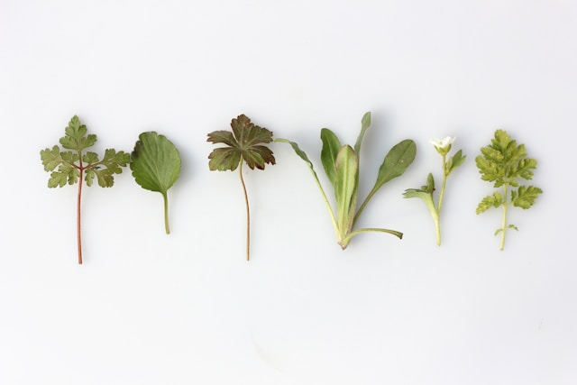

Handcrafted Holistic Goods for the Chattanooga Community
About Poisonberry Apothecary
Poisonberry Apothecary is a small local business located in the heart of Chattanooga, Tennessee. We specialize in crafting bespoke holistic goods including soaps, salves, lotions, elixirs, and more. Every product is handmade with care using locally sourced herbs, essential oils, and natural ingredients that nourish the body and calm the spirit. Our mission is to create natural remedies that connect people to the healing power of plants while promoting mindful, sustainable living.
Our Commitment to the Community
We believe wellness should be accessible to everyone, which is why we partner with other small makers and herbalists in Chattanooga to provide affordable, high-quality goods. From seasonal body oils to herbal teas and healing salves, Poisonberry Apothecary strives to make every item feel intentional and unique. Our products are cruelty-free, eco-conscious, and designed to inspire everyday rituals of self-care and connection.
